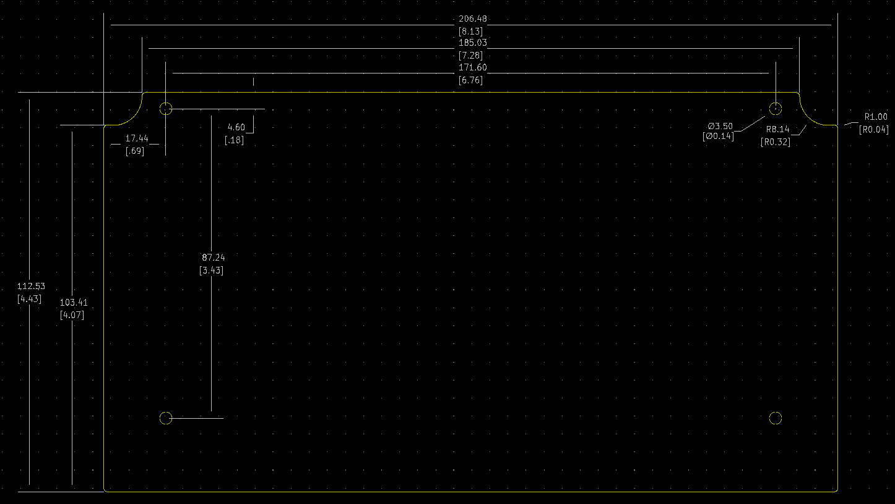

Project template containing the recommended board layout for Hammond Manufacturing 1595E:
Gray: 1595EGY - HM242-ND
Black: 1595EBK - HM244-ND
Features:
- Desk top electronic instrument enclosure, ideally suited for mounting printed circuit boards.
- Standard versions are molded from flame retardant ABS plastic (material carries a UL flammability rating of 94V-0).
- Economy versions are molded from general purpose ABS plastic (UL94-HB).
- Two piece construction. Integral card guides accept 1.5 mm (0.062”) P.C. cards. 0.20” diameter stand off bosses in the base for supporting various subassemblies.
- Integral brass bushings with four M3 x 0.5” x 8 mm (0.31”) Phillips pan head screws hold recessed panel into sloping front of case.
- 1.01 mm (0.04”) aluminum panel with paper on one side.
- Four self-adhesive feet included.
- Stocked in black and grey.
The "Dwgs.User" layer contains all critical dimmensions in milimeters[inches].
The "Edge.Cuts" layer contains the maximum board outline and holes to align with board standoffs.
PCB Preview:
